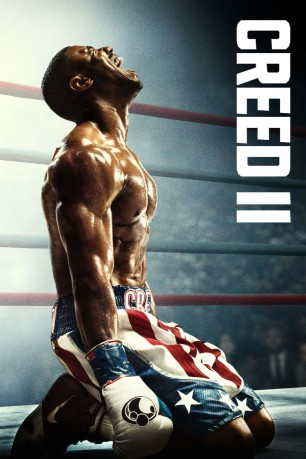

gesehen am 22.02.2019
gesehen am 22.02.2019Alternativ: Creed II (Englischer Titel) gesehen am 22.02.2019
 
 IMDB-Wertung: 7.5 / 10
IMDB-Wertung: 7.5 / 10  Metascore:
Metascore: 
Adonis Creed muss sich der größten Herausforderung seines Lebens stellen: Im Boxring wartet niemand Geringeres als Viktor Drago auf ihn, dessen Vater Ivan Drago einst Adonis' Erzeuger Apollo Creed während eines Schaukampfes totschlug. Doch mit Rocky Balboa an seiner Seite stellt sich der junge Boxer seinem Kontrahenten.
Jahr: 2018
Dauer: 130 Minuten
FSK: 12
Land: USA Studio: MGMTonspuren: DTS - ,
Untertitel: Deutsch, Englisch,
Auflösung: 1080p (1920x804) Größe: 15155 MB
Regisseur: Steven Caple Jr.
Drehbuch: Cheo Hodari Coker, Ryan Coogler, Sascha Penn, Sylvester Stallone, Juel Taylor
Soundtrack: Ludwig Göransson
Darsteller:
 Michael B. Jordan als Adonis Johnson
Michael B. Jordan als Adonis Johnson Sylvester Stallone als Rocky Balboa
Sylvester Stallone als Rocky Balboa Tessa Thompson als Bianca
Tessa Thompson als Bianca Dolph Lundgren als Ivan Drago
Dolph Lundgren als Ivan Drago Russell Hornsby als Buddy Marcelle
Russell Hornsby als Buddy Marcelle Wood Harris als Tony 'Little Duke' Burton
Wood Harris als Tony 'Little Duke' Burton Milo Ventimiglia als Robert Balboa
Milo Ventimiglia als Robert Balboa Brigitte Nielsen als Ludmilla Drago
Brigitte Nielsen als Ludmilla Drago Jacob 'Stitch' Duran als Stitch
Jacob 'Stitch' Duran als Stitch Christopher Mann als Dr. Percy Ewell
Christopher Mann als Dr. Percy Ewell Ivo Nandi als Russian Referee
Ivo Nandi als Russian Referee Michael Buffer als Michael Buffer
Michael Buffer als Michael Buffer Roy Jones Jr. als Roy Jones Jr.
Roy Jones Jr. als Roy Jones Jr. Gary Ayash als Reporter (uncredited)
Gary Ayash als Reporter (uncredited) Kristoffe Brodeur als Drago Security (uncredited)
Kristoffe Brodeur als Drago Security (uncredited) Jennifer Butler als Adrians Couple (uncredited)
Jennifer Butler als Adrians Couple (uncredited)Datei: X:\7+mehr(A-Z)\Rocky\Creed II Rocky's Legacy (2018, FSK12, 1920x804).mkv seit 22.02.2019
Festplatte: HD Collection-7+mehr(A-Z)+Person
 Es gibt insgesamt 11 Filme in der Gruppe '7+mehr(A-Z)\Rocky'
Es gibt insgesamt 11 Filme in der Gruppe '7+mehr(A-Z)\Rocky'